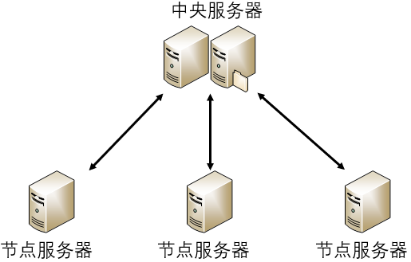
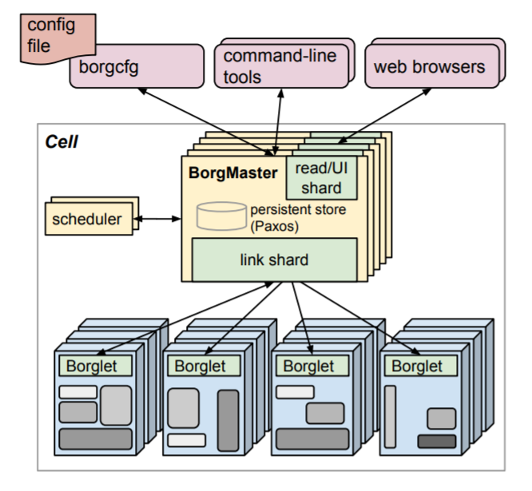
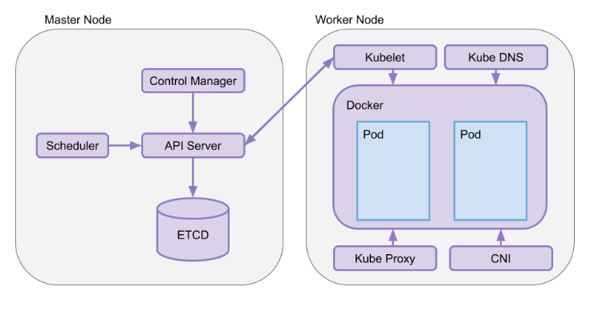
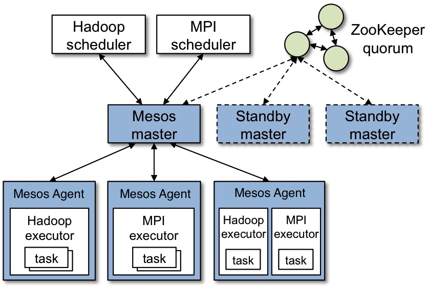
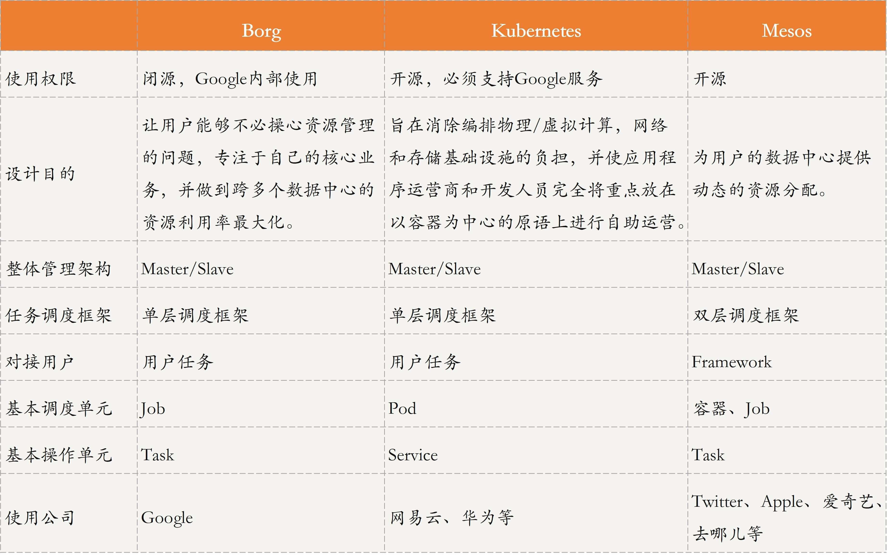
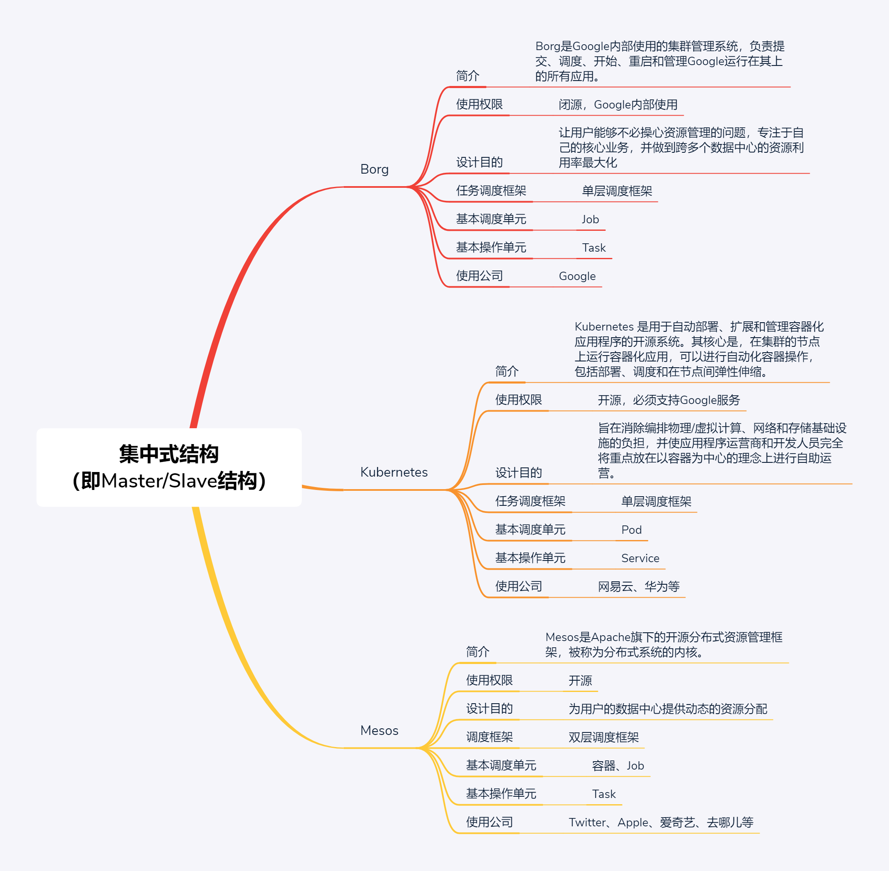

- 00 开篇词 四纵四横，带你透彻理解分布式技术.md.html
- 01 分布式缘何而起：从单兵，到游击队，到集团军.md.html
- 02 分布式系统的指标：啥是分布式的三围.md.html
- 03 分布式互斥：有你没我，有我没你.md.html
- 04 分布式选举：国不可一日无君.md.html
- 05 分布式共识：存异求同.md.html
- 06 分布式事务：All or nothing.md.html
- 07 分布式锁：关键重地，非请勿入.md.html
- 08 分布式技术是如何引爆人工智能的？.md.html
- 09 分布式体系结构之集中式结构：一人在上，万人在下.md.html
- 10 分布式体系结构之非集中式结构：众生平等.md.html
- 11 分布式调度架构之单体调度：物质文明、精神文明一手抓.md.html
- 12 分布式调度架构之两层调度：物质文明、精神文明两手抓.md.html
- 13 分布式调度架构之共享状态调度：物质文明、精神文明多手协商抓.md.html
- 14 答疑篇：分布式事务与分布式锁相关问题.md.html
- 15 分布式计算模式之MR：一门同流合污的艺术.md.html
- 16 分布式计算模式之Stream：一门背锅的艺术.md.html
- 17 分布式计算模式之Actor：一门甩锅的艺术.md.html
- 18 分布式计算模式之流水线：你方唱罢我登场.md.html
- 19 分布式通信之远程调用：我是你的千里眼.md.html
- 20 分布式通信之发布订阅：送货上门.md.html
- 21 分布式通信之消息队列：货物自取.md.html
- 22 答疑篇：分布式体系架构与分布式计算相关问题.md.html
- 23 CAP理论：这顶帽子我不想要.md.html
- 24 分布式数据存储系统之三要素：顾客、导购与货架.md.html
- 25 数据分布方式之哈希与一致性哈希：“掐指一算”与“掐指两算”的事.md.html
- 26 分布式数据复制技术：分身有术.md.html
- 27 分布式数据之缓存技术：“身手钥钱”随身带.md.html
- 28 分布式高可靠之负载均衡：不患寡，而患不均.md.html
- 29 分布式高可靠之流量控制：大禹治水，在疏不在堵.md.html
- 30 分布式高可用之故障隔离：当断不断，反受其乱.md.html
- 31 分布式高可用之故障恢复：知错能改，善莫大焉.md.html
- 32 答疑篇：如何判断并解决网络分区问题？.md.html
- 33 知识串联：以购买火车票的流程串联分布式核心技术.md.html
- 34 搭建一个分布式实验环境：纸上得来终觉浅，绝知此事要躬行.md.html
- 特别放送 Jackey：寄语天涯客，轻寒底用愁.md.html
- 特别放送 分布式下的一致性杂谈.md.html
- 特别放送 崔新：追根溯源，拨开云雾见青天.md.html
- 特别放送 徐志强：学习这件事儿，不到长城非好汉.md.html
- 特别放送 那些你不能错过的分布式系统论文.md.html
- 结束语 为什么说提升职业竞争力要从尊重、诚实开始？.md.html
- 捐赠
09 分布式体系结构之集中式结构：一人在上，万人在下
你好，我是聂鹏程。今天，我来继续带你打卡分布式核心技术。
云这个话题对我们来说已经非常熟悉了。可以说，云在我们的生活中无处不在，比如我们平时看的视频通常就是放在云上的。当我们要播放一段视频时，请求会先转发到云上，从云上下载数据到本地，然后播放。在这里，你肯定会疑惑，云上资源那么丰富吗，可以存放这么多东西吗？
云上的资源确实丰富，因为它可以尽可能地把更多的服务器组织起来，作为一个统一的资源，为多个用户提供服务。这里的重点是，把多个服务器管理起来，作为一个统一的资源提供服务。而如何组织，就是分布式体系结构的范畴了。
你会发现，很多场景下，我们的请求都会汇总到一台服务器上，由这台服务器统一协调我们的请求和其他服务器之间的关系。这种由一台服务器统一管理其他服务器的方式，就是分布式体系结构中的集中式结构（也称为Master/Slave架构），其中统一管理其他服务器的服务器是主，其他服务器是从，可以形象地比喻为“一人在上，万人在下”。
接下来，我就带你一起打卡分布式体系结构中的集中式结构吧。
什么是集中式结构？
集中式结构就是，由一台或多台服务器组成中央服务器，系统内的所有数据都存储在中央服务器中，系统内所有的业务也均先由中央服务器处理。多个节点服务器与中央服务器连接，并将自己的信息汇报给中央服务器，由中央服务器统一进行资源和任务调度：中央服务器根据这些信息，将任务下达给节点服务器；节点服务器执行任务，并将结果反馈给中央服务器。
集中式结构最大的特点，就是部署结构简单。这是因为，集中式系统的中央服务器往往是多个具有较强计算能力和存储能力的计算机，为此中央服务器进行统一管理和调度任务时，无需考虑对任务的多节点部署，而节点服务器之间无需通信和协作，只要与中央服务器通信协作即可，具体示意图如下所示：

经典集中式结构
现在，我们理解了什么是集中式结构，为了加深理解，接下来我以Google Borg、Kubernetes和Apache Mesos三个经典的集群管理系统为例，带你深入学习集中式结构的原理。
Google Borg
Borg是Google内部使用的集群管理系统，采用了典型的集中式结构，负责提交、调度、开始、重启和管理Google运行在其上的所有应用。
在Borg中，一个集群称为一个Cell，每个Cell里面有一个Leader，称为BorgMaster，即为中央服务器；其他服务器为节点服务器或从服务器，被称为Borglet。
首先，我们一起看看BorgMaster。它由两个进程组成，一个是Borgmaster主进程，一个是独立的scheduler进程：
- 主进程处理客户端的RPC请求，比如任务的执行状态更新或者查询等；同时，管理系统中所有实体的状态（比如，服务器、任务等），并负责和Borglet通信。
- scheduler进程负责任务调度，通过任务对资源的需求以及当前Borglet所在服务器的资源情况进行匹配，为任务寻找一个合适的节点服务器执行。我会在第11篇文章“分布式调度之单体调度：物质文明、精神文明一手抓”中与你详细讲述具体的调度流程。
接下来，我们一起看看Borglet。它是运行在每个节点机器的一个agent，负责任务的拉起、停止、重启等，并管理和收集本服务器资源，将任务的状态、服务器状态等信息上报给BorgMaster。而BorgMaster会周期性地轮询每个Borglet，以获取节点服务器的状态和资源信息等。
Borg的整体架构示意图如下所示：

备注：此图引自Borg论文。
Borg的主要用户是Google的开发者以及运行Google应用和服务的系统管理员（网站可靠性工程师，简称SRE）。用户以Job的形式向Borg提交工作，每个Job由运行一个或多个运行相同程序的Task组成。每个Job运行在一个Borg Cell中，并将一组机器当作一个单元进行管理。
Borg可以运行各种各样的任务，这些任务主要分为两类：
- 第一类是长服务，即长时间运行不停止的服务，并且要求能够处理短暂的、延迟敏感的请求（延迟要求在几微秒到几百毫秒之间）。这些服务主要用于面向终端用户的服务（比如Gmail、Google Docs、Web搜索），以及内部的一些基础设施服务（比如BigTable）。
- 第二类是批处理任务。通常需要几秒到几天的时间来完成的批处理Job，这些Job对短时间的性能波动并不是非常敏感。
这些负载通常在Cell之间混合分布，每个Cell随着主要租户以及时间的不同会运行各种不同的应用：批处理类型的Job来了又走，而许多面向终端用户的Job又期望一个能长时间使用的模式。
对于这些不同的服务，要求Borg能很好地处理所有的情况。Borg主要有三大优点：
- 开发者只需关注应用，不需要关注底层资源管理。它隐藏了资源管理以及错误处理，因此用户能集中精力开发应用。
- 高可靠性和可用性，支持多种应用。
- 支持上千级服务器的管理和运行。
Borg并不是第一个解决这些问题的系统，但却是少数能在这么大规模处理这些问题的同时，还能实现这样的弹性和完整性的系统之一。
Kubernetes
Kubernetes是Google开源的容器集群管理系统，是Borg的一个开源版本。Kubernetes 是用于自动部署、扩展和管理容器化应用程序的开源系统。其核心是，在集群的节点上运行容器化应用，可以进行自动化容器操作，包括部署、调度和在节点间弹性伸缩等。
Kubernetes也是典型的集中式结构，一个Kubernetes集群，主要由Master节点和Worker节点组成，以及客户端命令行工具kubectl和其他附加项。
我们先来看看Master节点。它运行在中心服务器上，Master节点由API Server、Scheduler、Cluster State Store和Control Manger Server组成，负责对集群进行调度管理。
- API Server：是所有REST命令的入口，负责处理REST的操作，确保它们生效，并执行相关业务逻辑。
- Scheduler：根据容器需要的资源以及当前Worker节点所在节点服务器的资源信息，自动为容器选择合适的节点服务器。
- Cluster State Store：集群状态存储，默认采用etcd，etcd是一个分布式key-value存储，主要用来做共享配置和服务发现。
- Control Manager：负责整个集群的编排管理。它监视集群中节点的离开和加入，将集群的当前状态与etcd中存储的所需状态进行核对。比方说，当某个节点发生故障，它会在其它节点上增加新的Pod以匹配所需的副本数。
接下来，我们看看Worker节点吧。它作为真正的工作节点，运行在从节点服务器，包括kubelet和kube-proxy核心组件，负责运行业务应用的容器。
- kubelet：用于通过命令行与API Server进行交互，根据接收到的请求对Worker节点进行操作。也就是说，通过与API Server进行通信，接收Master节点根据调度策略发出的请求或命令，在Worker节点上管控容器（Pod），并管控容器的运行状态（比如，重新启动出现故障的Pod）等。Pod是Kubernetes的最小工作单元，每个Pod包含一个或多个容器。
- kube-proxy：负责为容器（Pod）创建网络代理/负载平衡服务，从API Server获取所有Server信息，并根据Server信息创建代理服务，这种代理服务称之为Service。Kube-proxy主要负责管理Service的访问入口，即实现集群内的Pod客户端访问Service，或者是集群外访问Service，具有相同服务的一组Pod可抽象为一个Service。每个Service都有一个虚拟IP地址（VIP）和端口号供客户端访问。
Kubernetes架构示意图如下所示：

备注：此图引自https://www.padok.fr/en/blog/kubernetes-architecture-clusters
图中， Kube DNS负责为整个集群提供DNS服务；CNI是Container Network Interface的一个标准的通用接口，用于连接容器管理系统和网络插件。
与Borg不同的是，Kubernetes主要是一个容器编排引擎，不仅支持Docker，还支持Rocket(另一种容器技术)。
Kubernetes也已经被很多公司采用，比如网易云、华为在需要使用容器进行资源隔离以运行相关业务的场景下，采用了大规模 Kubernetes 集群。
在容器管理方面，Kubernetes有很多优势。
- 自动化容器的部署和复制。Kubernetes执行容器编排，因此不必人工编写这些任务的脚本。
- 将容器组织为组，弹性伸缩。Kubernetes引入Pod机制，Pod代表着能够作为单一应用程序加以控制的一组容器集合。通过Pod机制，Kubernetes实现了多个容器的协作，能够有效避免将太多功能集中到单一容器镜像这样的错误实践中。此外，软件可以向外扩展跨越多个Pods实现初步部署，且相关部署可随时进行规模伸缩。
- 容器间负载均衡。Services用于将具备类似功能的多个Pod整合为一组，可轻松进行配置以实现其可发现性、可观察性、横向扩展以及负载均衡。
- 易于版本控制与滚动更新。Kubernetes采取“滚动方式”实现编排，且可跨越部署范围内的全部Pod。这些滚动更新可进行编排，并以预定义方式配合当前可能尚不可用的Pods数量，以及暂时存在的闲置Pods数量。Kubernetes利用新的应用程序镜像版本对已部署Pods进行更新，并在发现当前版本存在不稳定问题时回滚至早期部署版本。
Mesos
理解了Google Borg和Kubernetes的集中式结构，接下来我们再看看Apache旗下的开源分布式资源管理框架Mesos吧。它被称为是分布式系统的内核，最初由加州大学伯克利分校的AMPLab开发，后在Twitter得到广泛使用。
Mesos的开发受到了Borg系统的启发，也是采用的典型的集中式架构。Mesos与Borg不同之处在于，Borg的Master直接对接用户应用，也就是说用户可以向Borg的Master直接请求任务。但Mesos不可以，Mesos只负责底层资源的管理和分配，并不涉及存储、 任务调度等功能，因此Mesos Master对接的是Spark、Hadoop、Marathon等框架，用户的任务需要提交到这些框架上。也正因为此，Mesos的任务调度框架是双层结构。
在Mesos中，一个集群包括Mesos Master和多个Mesos Agent。其中，Mesos Master运行在中央服务器，Mesos Agent运行在节点服务器上。
Mesos Master负责收集和管理所有Agent所在服务器的资源和状态，并且对接Spark、Hadoop等框架，将集群中服务器的资源信息告知给这些框架，以便这些框架进行任务资源匹配和调度。Mesos Agent负责任务的拉起、停止、重启等，并负责收集所在服务器的资源(比如CPU、内存等)信息和状态，上报给Mesos Master。
Mesos Master通常采用一主两备的方式，以方便故障处理和恢复。而Mesos Master的选主策略，采用的就是我们在第4篇文章“分布式选举：国不可一日无君”中介绍的ZAB算法。
Mesos架构示意图如下所示：

备注：此图引自《Mesos架构 · Mesos中文手册》
如上所述，Mesos对接的是框架，并且可以同时对接多个框架，目前已经被很多公司使用。比如，国外的Twitter、Apple、Airbnb、Uber等，国内的爱奇艺、去哪儿、携程、当当等。
这些公司选择Mesos，主要是因为它具有如下优势：
- 效率。Mesos对物理资源进行了逻辑抽象，在应用层而不是物理层分配资源，通过容器而不是虚拟机（VM）分配任务。因为应用程序的调度器知道如何最有效地利用资源，所以在应用层分配资源能够为每个应用程序的特殊需求做考量; 而通过容器分配任务则能更好地进行“装箱”。
- 可扩展性。Mesos可扩展设计的关键是两级调度架构，其中Framework进行任务调度，Mesos Master进行资源分配。由于Master不必知道每种类型的应用程序背后复杂的调度逻辑，不必为每个任务做调度，因此可以用非常轻量级的代码实现，更易于扩展集群规模。
- 模块化。每接入一种新的框架，Master无需增加新的代码，并且Agent模块可以复用，为此开发者可以专注于应用和框架的选择。这，就使得Mesos可以支持多种框架，适应不同的应用场景。
随着分布式应用程序和微服务的流行，越来越多的用户正在寻找一种技术，来帮助他们管理这些复杂的应用程序。而Mesos为数据中心带来的这些好处，就使得越来越多的人关注Mesos及其相关项目。
分析对比
Borg、Kubernetes和Mesos采用的都是集中式结构，要理解它们的实现原理，就要清楚其架构。所以，虽然这部分内容理解起来有难度，但希望你可以深入进去探其本质，这样在实际操作中，就可以从用途出发选择合适的集群管理架构。
接下来，我将这3种集群管理系统的特点梳理为了一张表格，以方便你理解与记忆。

知识扩展：Mesos是如何支持容器部署的？
目前，容器技术十分热门，解决了服务打包发布、资源隔离的问题。我们知道，Kubernetes的设计主要针对的就是容器，那么Mesos又是如何支持容器部署呢？
Mesos本身只负责资源管理，不负责任务调度。但Mesos可以对接不同的框架，Mesos+Marathon可以支持容器调度和部署。Marathon支持容器的调度，将容器部署请求发给Mesos Master，Mesos Master再将请求转发给Mesos Agent，Mesos Agent的执行器会将容器拉起。
目前，Mesos+Marathon支持的容器，主要包括Docker和cgroups。
总结
今天，我主要与你分享了分布式系统中的集中式架构，并以Borg、Kubernetes、Mesos这三款知名的集群管理系统为例，与你描述了集中式架构的设计目的、框架结构，以及各组件模块的功能等。
Borg是Google公司内部使用的集群管理系统，既可以执行长服务，也可以执行批处理任务，是一个具有强大功能的、复杂的集群管理系统。
Kubernetes是Borg的简化开源版，是一个正在兴起的集群管理系统。Mesos和Kubernetes都是为帮助应用程序在集群环境中运行而创建的，Kubernetes更加专注于运行容器集群，具有更多功能。
Mesos是非常典型的开源集群管理系统。在Mesos之上，可以搭载诸如Spark、Hadoop等框架，甚至可以在Mesos上集成Kubernetes，扩展性强。
可以发现，这三种集群管理系统虽然具有不同的功能组件，但整体框架采用的都是集中式架构。因此，你只要理解了一个集群管理系统的架构，再去理解其他集中式的集群管理架构就会很容易了。
Kubernetes由于其成熟的社区、丰富的文档，所以如果你是一个新手的话，Kubernetes就是一个很棒的开始。加油，赶紧开启你的集群管理之旅吧。
好了，到最后，我再以一个思维导图为你总结一下本讲的内容，以方便你理解记忆。

思考题
在集中式架构中，Master如何判断Slave是否存活呢？
我是聂鹏程，感谢你的收听，欢迎你在评论区给我留言分享你的观点，也欢迎你把这篇文章分享给更多的朋友一起阅读。我们下期再会！
© 2019 - 2023 Liangliang Lee. Powered by gin and hexo-theme-book.